Resum del festival

El festival Fantàstik Visions és un esdeveniment dedicat al cinema fantàstic en totes les seves formes, incloent-hi cortometratges i llargmetratges. Aquest festival posa èmfasi en projectes que exploren mons alternatius, la fantasia i històries que desafien la realitat, oferint als espectadors una experiència creativa i innovadora. A més de les projeccions, el festival organitza concursos per premiar les millors obres, donant espai a noves veus creatives dins el gènere fantàstic. Així, Fantàstik Visions es converteix en una plataforma per a cineastes independents que ofereixen una visió única i singular del cinema fantàstic, trencant amb les convencions de la narrativa tradicional.
Pel·licules destacades
Apocalipsis Z: El principio del fin
Carles Torrens
2023 Duración 112 min.

A Different Man
Aaron Schimberg
2024 Duración 112 min.

Arcadian
Benjamin Brewer
2024 Duración 92 min.